54. Настройка времени
Время в операционных системах играет важную роль. Если оно настроено неправильно, то можно столкнуться с различными проблемами:
невозможно будет зайти на безопасные сайты. На многих сайтах есть сертификаты, благодаря которым наш браузер и система могут доверять этим сайтам. Но у сертификатов есть срок действия. И если время в нашей системе сильно отстаёт или спешит, то браузер будет считать сертификат недействительным и не пускать нас на сайт;
также сложнее будет разобраться в логах и понять, какие события связаны друг с другом, особенно когда у вас множество систем. Где-то часы спешат на 5 минут, где-то отстают на час, и сложнее становится коррелировать события.
многие сервисы, настроенные на отказоустойчивость, из-за различий во времени могут привести к серьёзным неполадкам.
И это лишь часть проблем. Поэтому администратору важно уметь настраивать время.
Часы реального времени (RTC)
В каждом компьютере в материнской плате есть часы, называемые часами реального времени - real time clock - RTC. Засчёт плоской батарейки они работают всегда, даже когда компьютер выключен. Но они сбиваются, если эта батарейка разрядится или если её вытащить. И эти часы обычно настраиваются через BIOS, но и операционная система может их изменить.
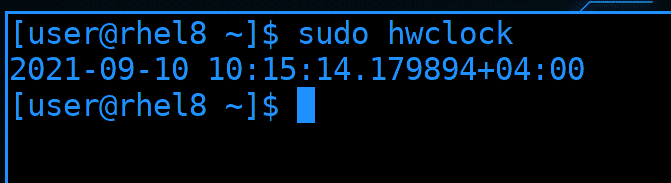
Операционная система при включении узнаёт время по этим часам. Чтобы посмотреть текущее время на них, можно использовать утилиту hwclock. Цифры после точки - это микросекунды, а плюс указывает, что ко времени добавлено 4 часа - учтён часовой пояс.
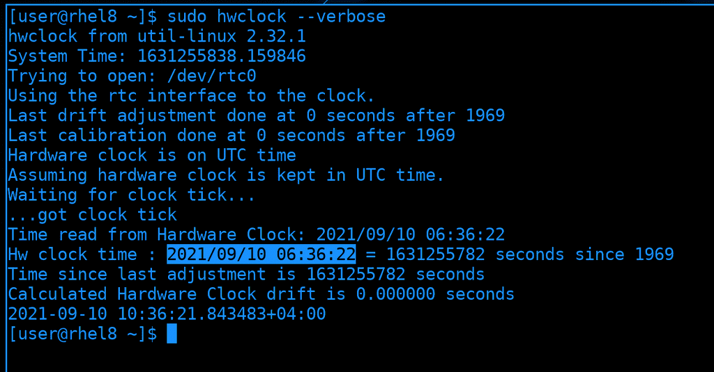
Время на таких часах считается в секундах, где нулём является полночь первого января 1970 года, так называемая «Эпоха UNIX», а количество прошедших секунд называется UNIX-временем. По-умолчанию, Linux предполагает, что на часах стоит время по UTC и добавляет к ним разницу в часовом поясе, а Windows предполагает локальное время. И если вы поставите на один компьютер обе системы, Windows-е и Linux будут перебивать часы друг друга. Но это легко исправимо, достаточно на линуксе указать, что на этих часах локальное время.
Системные часы
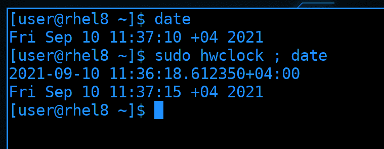
Во время запуска компьютера ядро операционной системы считывает RTC, берёт время и запускает свои часы, называемые системными. Оно работает в оперативке, поэтому при каждом выключении пропадает. Узнать время на системных часах можно с помощью утилиты date. Это независимые часы, поэтому спустя какое-то время системные часы могут расходиться с часами реального времени:
sudo hwclock; date
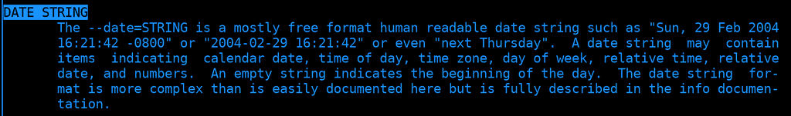
Системное время можно поменять с помощью этой же утилиты. Для этого нужно использовать ключ -s - set. Время можно задавать по разному, найдите в man-е по date строчку «DATE STRING», здесь есть примеры.
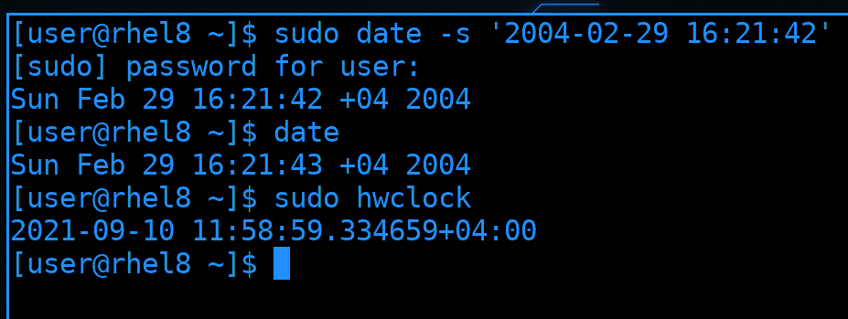
Скопируем пример и запустим команду:
sudo date -s '2004-02-29 16:21:42'
date
sudo hwclock
Как видите, системное время поменялось, теперь на часах 2004 год. Но это никак не повлияло на RTC.
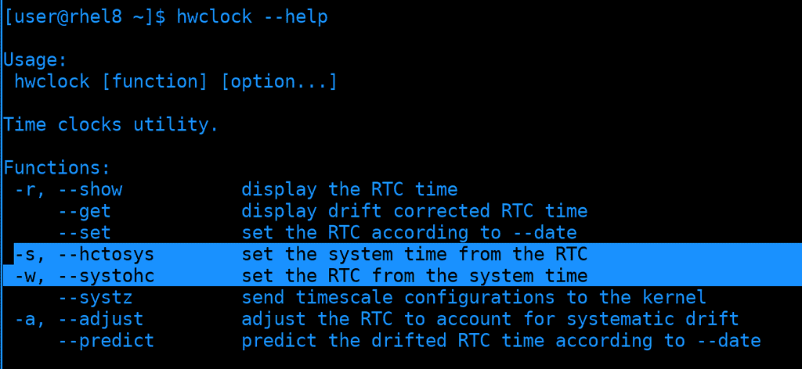
Можно записать время с системных часов на часы реального времени и наоборот. Это можно сделать через утилиту hwclock с помощью выделенных ключей.
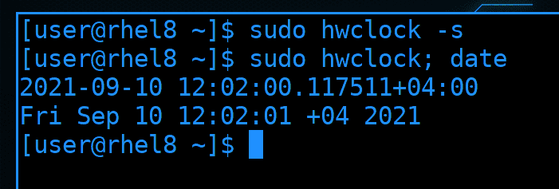
Давайте синхронизируем часы, что исправить время.
sudo hwclock -s
sudo hwclock; date
И теперь системные часы показывают 2021 год.
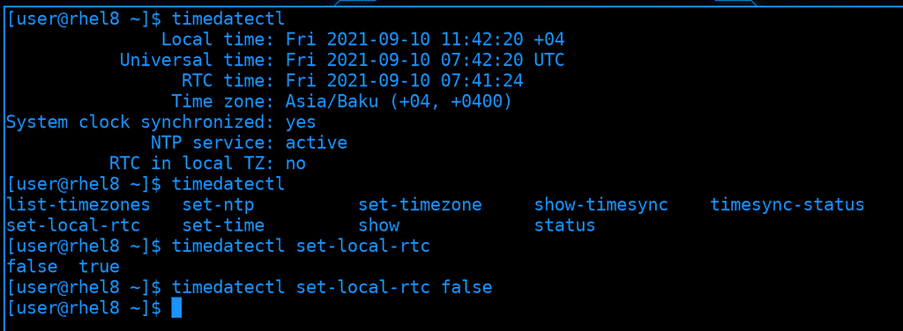
Есть утилита, которая объединяет настройку часов реального времени, системных часов и часового пояса - timedatectl. Как тут видно, локальное время и время на RTC отличаются. Это как раз о разнице с Windows. И чтобы Linux не добавлял к RTC таймзону нужно использовать опцию set-local-rtc со значением true:
sudo timedatectl set-local-rtc true
Но я этого делать не буду, у меня со временем проблем нет.
Давайте, для примера, настроим часовой пояс. Для начала найдём таймзону с помощью опции list-timezones и используя поиск с помощью слэша - /Moscow
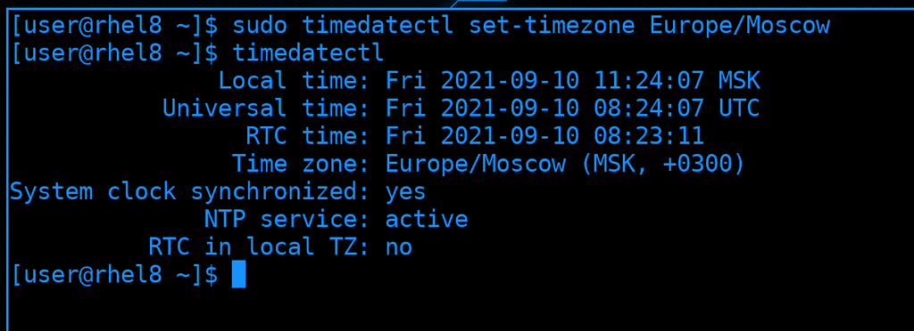
И с помощью опции set-timezone зададим найденное значение:
sudo timedatectl set-timezone Europe/Moscow
timedatectl
Как видите, теперь часовой пояс - Москва.
NTP
Когда у вас один компьютер, настроить время не проблема. Если время будет спешить или отставать, поправить его тоже не проблема. Но постоянно следить и исправлять часы неудобно. А если дело касается администрирования множества серверов, чувствительных ко времени, то за всеми уследить трудно, да и всё это лишняя трата сил и времени.
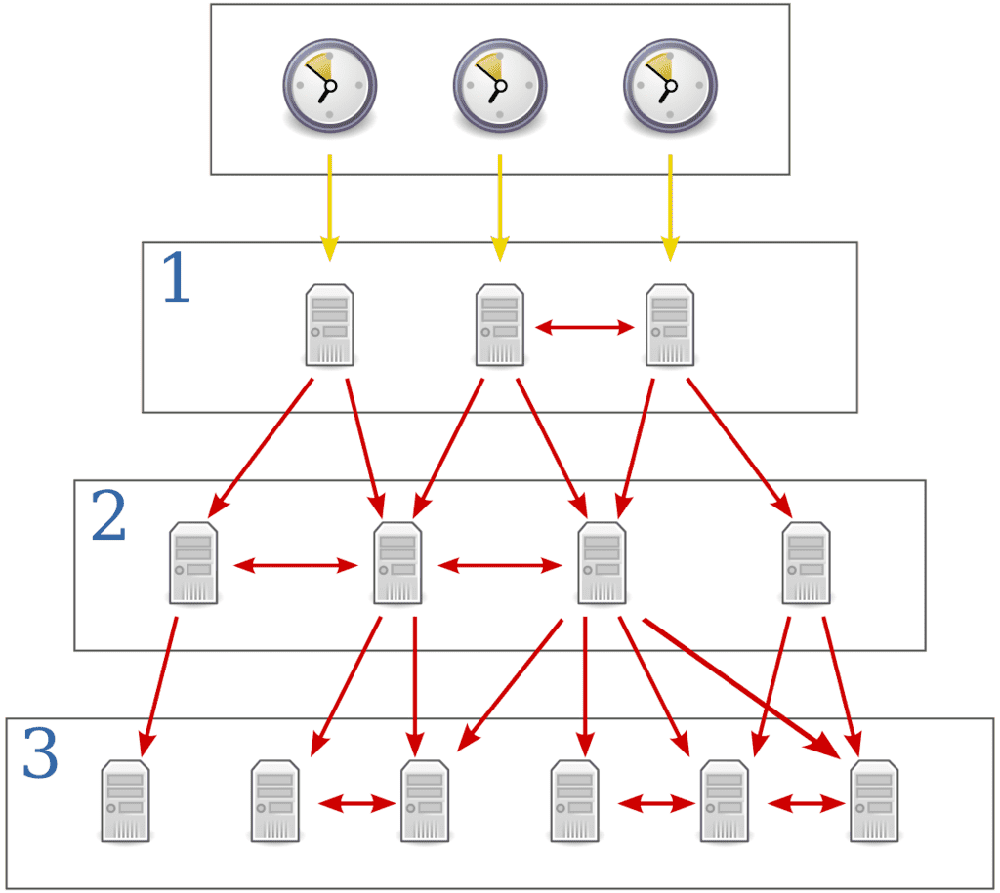
Чтобы на всех ваших системах было одно и тоже время и чтобы оно постоянно было правильным, используется протокол NTP - network time protocol. Грубо говоря, есть сервера, которые знают правильное время и ваши системы могут периодически обращаться к этим серверам, узнавать время и поправлять у себя. Сами сервера тоже в свою очередь берут время у других серверов.
И есть определённая иерархия. Точное время с минимальной погрешностью определяется на специальных часах, называемых атомными. Но таких часов не так много, чтобы каждый мог к ним подключиться. Поэтому к ним подключаются первичные сервера времени.
Но и первичных серверов времени довольно мало, чтобы каждый желающий мог к ним подключаться. К ним могут подключаться только те, кто раздаёт время на большое количество устройств, обычно это вторичные сервера времени.
Т.е. всё по иерархии, как на картинке. У каждого сервера есть так называемый стратум, это то, на каком слое он находится, т.е. stratum 1 - это первичные сервера, stratum 2 - вторичные и т.д. Всего значений может быть 15. Чем ближе сервер к атомным часам, тем меньше стратум и тем точнее часы. Но речь идёт о микросекундах, поэтому, в большинстве случаев, это не критично.
Обычно, в локальной сети вы поднимаете несколько своих ntp серверов и указываете их на других машинках. Ваши NTP сервера будут брать время из публичных серверов, а всякие компьютеры и сервера в сети - с ваших локальных NTP серверов. Если вдруг интернет пропадёт, или вы намеренно запретите всем серверам выход в интернет, всё равно будет работать синхронизация с локальным NTP сервером и время не разбежится.
Есть различные программы, которые могут забирать и раздавать время, т.е. выступать NTP клиентом и сервером. Одни из самых популярных - ntpd и chrony. Есть определённые различия в функционале, но они не так существенны в большинстве случаев. Но если вам интересно, можете почитать по ссылке.
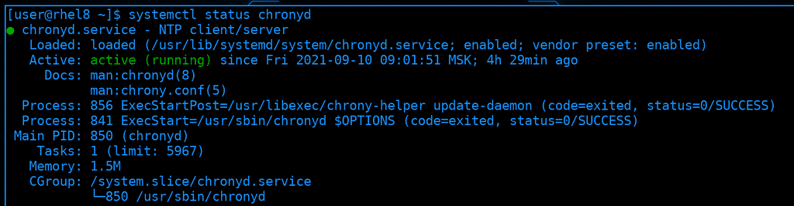
При установке системы мы поставили галочку «Network Time», благодаря чему у нас установился ntp клиент. По умолчанию, это chrony. Чтобы постоянно синхронизировать время, он работает как демон:
systemctl status chronyd
Если будут расхождения во времени, chrony поправит это. Но не то чтобы он заменит время на правильное - так делать нельзя, так как это может привести к большим проблемам. Вместо этого chrony будет ускорять или замедлять часы на доли секунд, чтобы исправить время. Соответственно, если время отличается сильно, то и смысла синхронизировать зачастую не будет, так как такой процесс может занять годы. Однако, если ничего важного и чувствительного ко времени не работает на сервере, то можно пренебречь ускорением и сразу выставить нужное время.
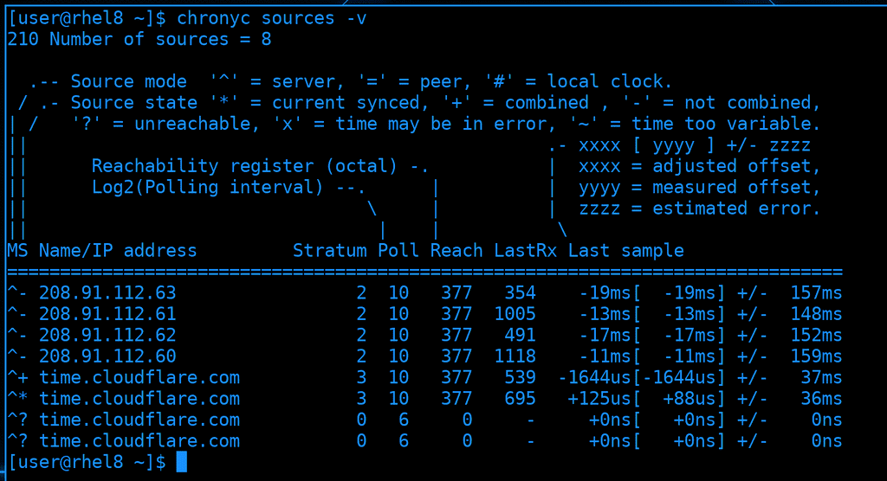
Также есть утилита chronyc, которая позволяет управлять и смотреть всякую информацию. Одна из главных опций - sources, она позволяет узнать, к каким серверам мы обращаемся и всё ли нормально. А ключ -v - verbose - даёт подсказки, что означают те или иные символы:
chronyc sources
Если проанализировать вывод: все строчки в таблице начинаются с символа карет - наверху видно, что это обозначение для серверов. Как видите, серверов много. Обычно рекомендуется указывать либо 4 и больше серверов, либо 1. Дело в том, что NTP для доставки информации использует UDP - т.е. не гарантирует целостность данных. Также, говоря о точности времени, речь идёт о микросекундах, а у разных серверов время может отличаться. Если указать два сервера - сложно будет понять, кто из них выдаёт правильное время. С одним сервером таких вопросов не будет, но, если такой сервер станет недоступен, то и узнать время не получится. Если же указать 4 или больше серверов, будут использоваться алгоритмы комбинирования для определения времени.
Второй символ в таблице показывает, какой сервер используется - он выделен звёздочкой. Значения с этого сервера могут комбинироваться со значениями от некоторых других серверов, с какими-то не могут. А вот вопрос означает, что такой сервер недоступен.
После адресов серверов мы также видим их стратумы. Обычно это 2 или 3. 0 означает, что мы не можем определить stratum, потому что сервер недоступен.
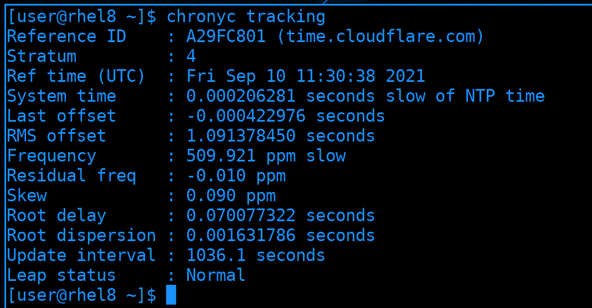
Опция tracking детальнее раскроет информацию. Большая часть этих данных нужна для диагностики проблем. И это не так важно, если вы не работаете с сервисами, щепетильными ко времени.
Настройка chronyd
Зачастую вам нужно уметь поднять NTP сервер и настроить клиенты, чтобы они подключались к вашему серверу. Сделаем так - RHEL настроим в качестве NTP сервера, который будет брать время от публичных NTP серверов и раздавать на наш Centos.
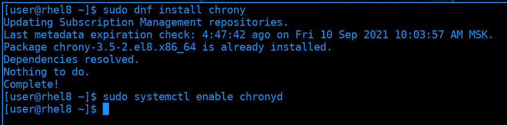
Начнём с NTP сервера. Им у нас будет chronyd, который уже предустановлен. Но, если у вас его нет, следует его установить и включить. Пакет называется chrony, а сервис - chronyd:
sudo dnf install chrony
sudo systemctl enable chronyd
Обычно, пакет уже приходит с настройками, где указаны публичные NTP сервера, но давайте мы их заменим. Есть проект ntp.org, в котором участвуют сервера по всему миру. Заходим на сайт ntppool.org и выберем регион. Для России это Europe.
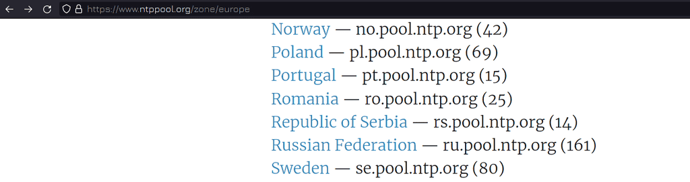
В списке находим РФ.
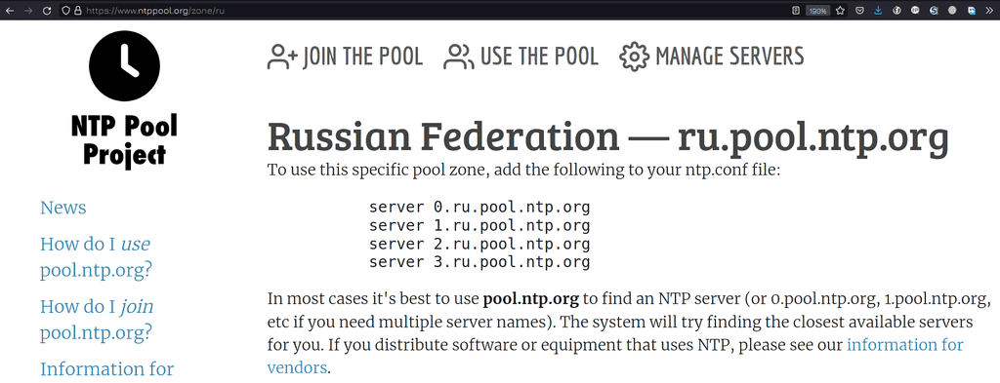
Здесь указаны 4 адреса. Но на самом деле это не 4 сервера, а сотня серверов, которые находятся за этими адресами. Снизу также есть подсказка, что в большинстве случаев лучше указывать pool.ntp.org, чтобы найти ближайшие адреса. Мы можем как скопировать эти 4 адреса и использовать их, так и последовать совету и использовать pool.ntp.org. Параметр server мы будем использовать на CentOS, поэтому давайте на RHEL используем pool.
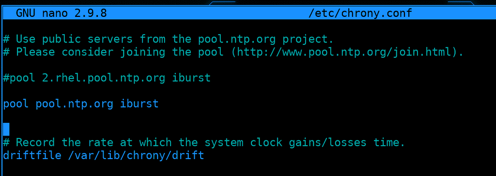
Зайдём в /etc/chrony.conf. Здесь уже есть строчка pool, закомментируем её и напишем свою. Кстати, в строчке pool также указан параметр iburst. Благодаря ему при запуске операционной системы или сервиса синхронизация времени происходит быстрее.
pool pool.ntp.org iburst
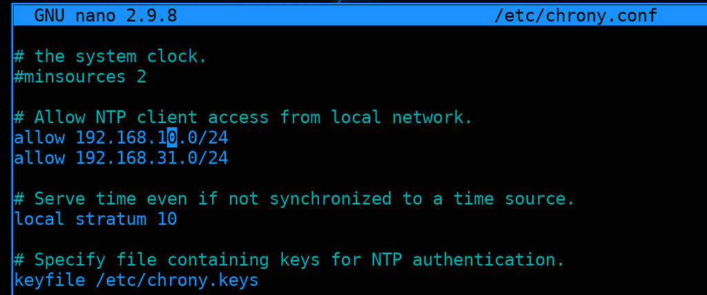
Спустимся чуть ниже. Чтобы превратить chrony в NTP сервер, т.е. чтобы он также раздавал время, надо раскомментировать строчку allow, в которой нужно указать сети, для которых мы будем раздавать адреса. Допустим, я хочу, чтобы он раздавал в сетях 192.168.10.0/24 и 192.168.31.0/24.
allow 192.168.10.0/24
allow 192.168.31.0/24
Ещё одно важное замечание. Если вдруг этот компьютер потеряет доступ в интернет и не сможет достучаться до указанных NTP серверов, он перестанет раздавать время. Чтобы он продолжал раздавать время даже когда нет интернета, допустим, в закрытой сети, надо расскомментировать строчку local stratum:
local stratum 10
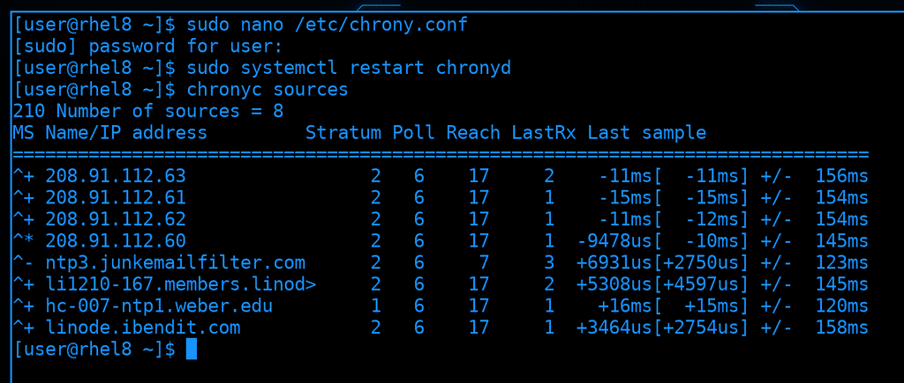
После проделанных изменений стоит перезапустить сервис chronyd, подождать пару секунд и проверить синхронизацию времени, с помощью того же chronyc:
sudo systemctl restart chronyd
chronyc sources
Я вижу, что перед одним из серверов стоит звёздочка, да и справа есть значения, а не нули. Значит, всё работает.
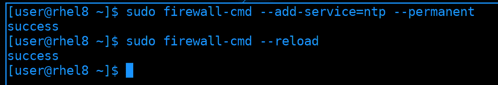
Также, чтобы CentOS мог подключиться к этому серверу и брать отсюда время, мне нужно разрешить NTP на файрволе. NTP работает на 123 порту по UDP, а в firewalld его можно добавить просто как сервис:
sudo firewall-cmd --add-service=ntp --permanent
sudo firewall-cmd --reload
NTP сервер мы настроили, осталось настроить клиент.
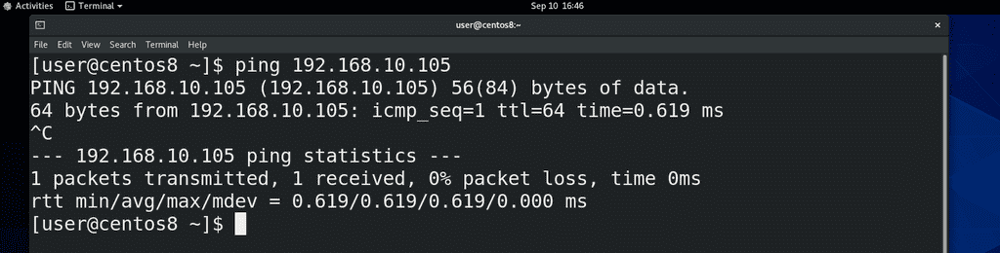
Для начала убедимся, что CentOS видит RHEL:
ping 192.168.10.105
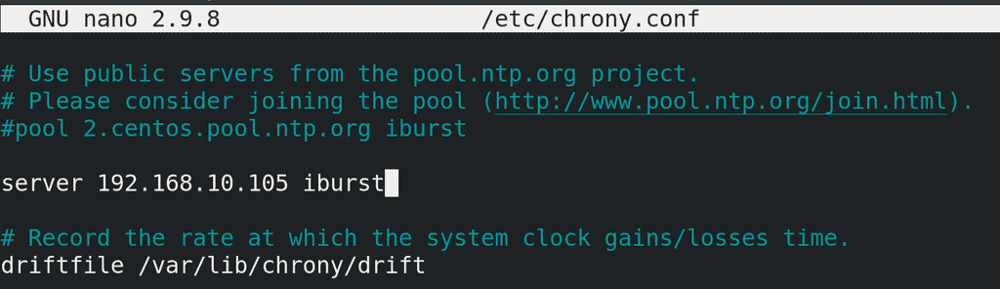
Заходим в /etc/chrony.conf, комментируем pool и прописываем server с адресом RHEL.
server 192.168.10.105 iburst
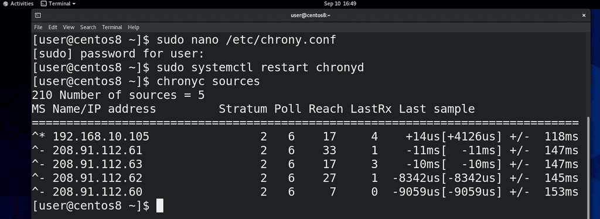
Сохраняем изменения и перезапускаем сервис:
sudo systemctl restart chronyd
Ждём пару секунд и убеждаемся, что NTP сервер доступен и работает
chronyc sources
Как видите, в списке отобразился адрес нашего сервера и перед ним есть звёздочка - значит всё работает. Таким образом, мы настроили локальный NTP сервер и подключили к нему какую-то машинку, чтобы она синхронизировала время.
NTP сервер потребляет мало ресурсов, поэтому мы можем сделать 4 таких сервера, чтобы время в сети было точнее, либо оставить один, это уже зависит от количества систем в нашей сети. И хотя функционал NTP сервера довольно большой и мы рассмотрели его поверхностно, этого хватает для большинства задач.
Давайте подведём итоги. Мы с вами разобрали часы реального времени и системные часы. Эти часы можно настроить с помощью различных утилит - hwclock, date и timedatectl. Но лучше всего использовать протокол NTP, чтобы на всех наших серверах было одно актуальное время, что позволит избежать многих проблем.